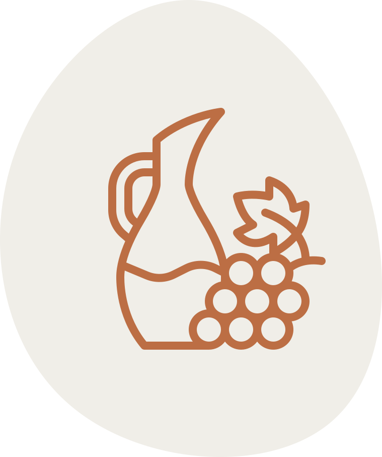

Tasting Сonditions
Find out more about the possibilities of visiting our winery.
require visitors to be of legal drinking age and to follow the instructions of the staff. We kindly ask you to bring valid identification to verify your age and follow certain safety protocols.
Terms&Conditions
Privacy Policy
Legal Information
All guests should dress appropriately and refrain from wearing strong perfumes or colognes. We also ask you to be mindful of the tasting etiquette and follow instructions of our staff.
It is strongly recommended that you book in advance if you wish to attend a wine tasting event. This ensures that you have a place booked and means that the event organizers can plan accordingly. Booking in advance also means that you can take advantage of any discounts or special offers that may be available. Our wine tasting events are in high demand and it is important to ensure that you are able to attend by booking your place in advance.
Book a guided tour at a winery and discover the wonderful world of wine. Enjoy the breathtaking views and learn about the process of winemaking.
Our knowledgeable guides will lead you through the vineyards, explaining how grapes are grown, harvested and made into wine. Sample delicious wines while taking in the scenery of the beautiful vineyards.
Delicious wine
Enjoy the taste of our selected wines.
History of winemaking
Learn more about winemaking processes.
What should I wear to a winery visit?
Generally speaking, it is best to dress in smart casual attire. You should avoid wearing open-toed shoes or flip-flops. It is also recommended that you wear layers in case the temperature inside the winery is different than outside.
What payment options do you provide?
We offer a variety of payment methods. We accept cash, checks, and the majority of credit cards such as Visa, MasterCard, and American Express.
Can I bring my own food and drinks?
Sorry, we do not allow outside food or beverages, but we assure you that we provide many food options during our tastings.
Do I need to make a reservation?
Yes, it's better to make a reservation if you want to join our guided tour or wine tasting. Some of the events are available for club members only.
What does membership mean?
Membership in our club provides the complimentary delivery of our wines to your doorstep, participation in private events, tastings and so on.
Can I buy wine right at your winery?
Of course, we have a shop at the tasting room. You can buy any wines you like or visit one of the authorized stores in the USA.